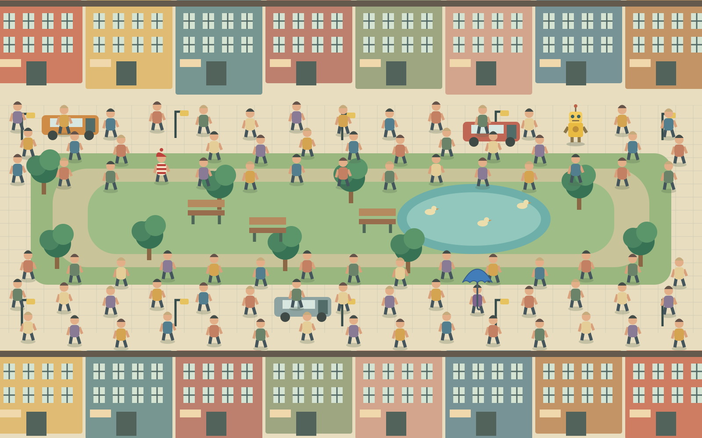

A SMALL SEARCH IN A BUSY PLACE
Three friends. One busy park.
Find Milo in red stripes, Ada with a blue umbrella, and Pip the yellow robot. Click the scene, then choose who you found. Keyboard: arrows to aim, Enter to choose, Escape to close.
0.0 s0 / 3 found
Starting your search…

Fastest searches
| Name | Time |
|---|